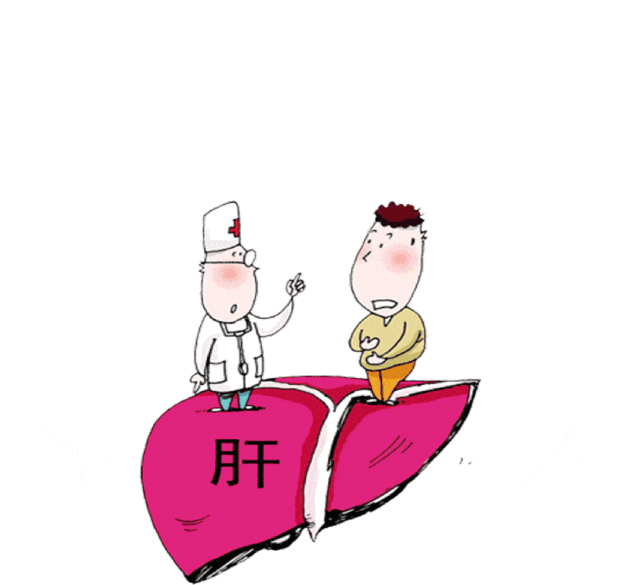
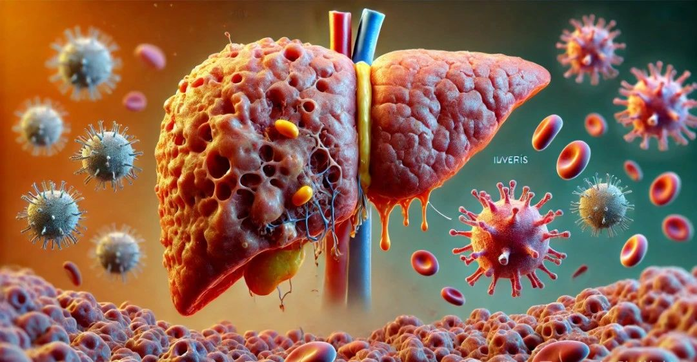
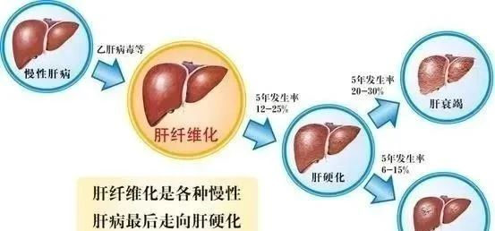
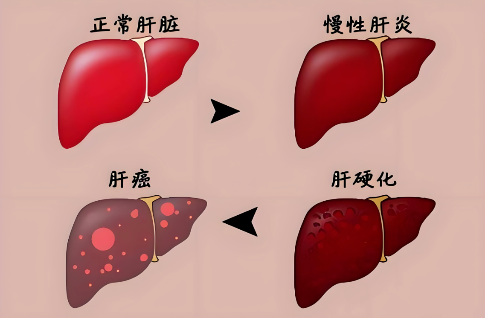
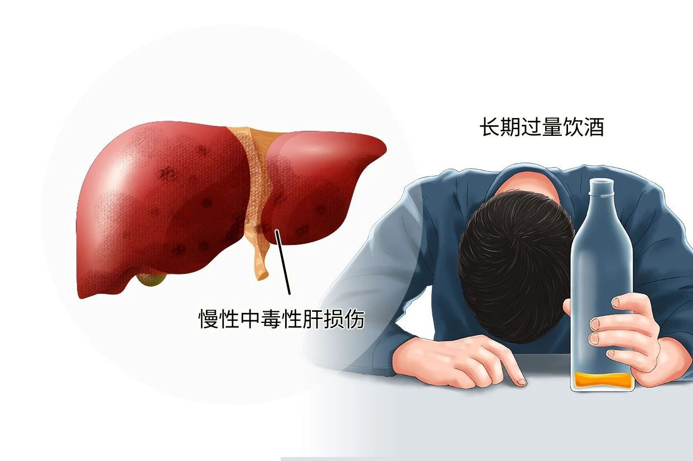
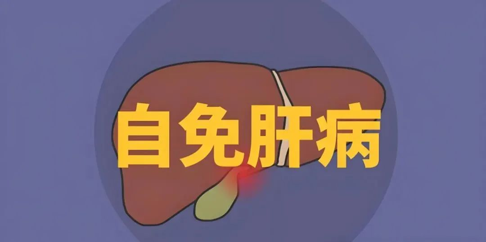
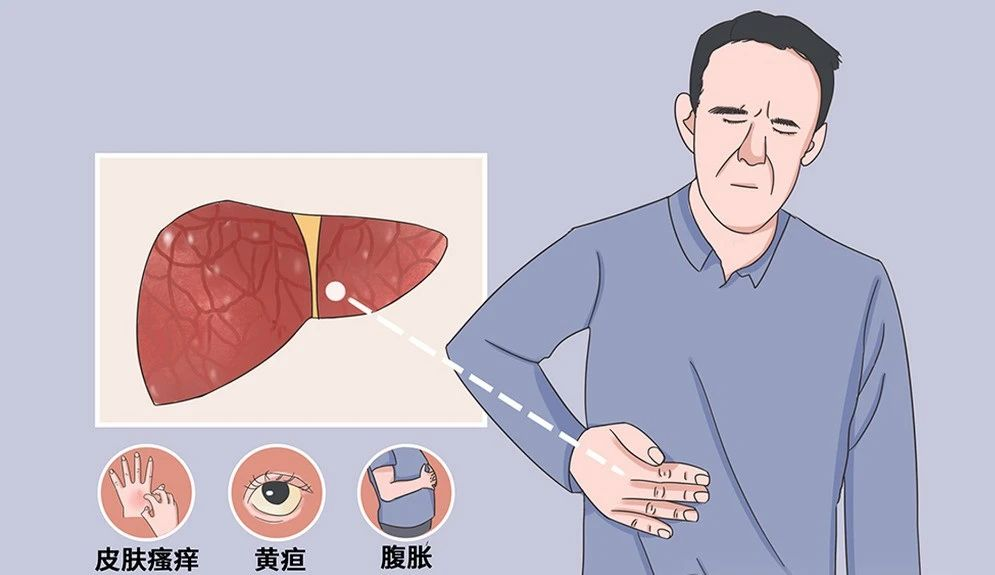
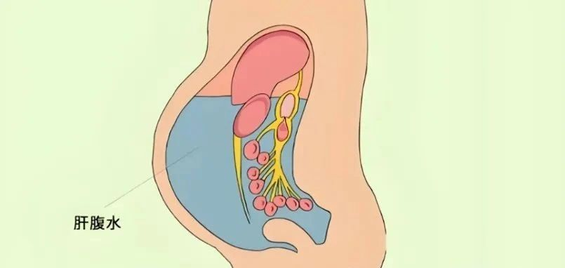

About Us
关于百年春
肝脏作为人体重要的代谢和解毒器官，易受多种因素损伤，包括机械损伤、缺血性损伤、中毒性肝病（药物、毒物、酒精等）、感染性肝病、自身免疫性肝病等。
这些损伤可导致急性肝炎、肝纤维化、肝硬化等严重后果。传统治疗方法在某些情况下效果有限，因此探索新的治疗手段显得尤为重要。

目前对肝脏严重损伤患者的干预手段主要有药物干预、人工肝与肝移植三种方式。
但这些传统干预手段甚至是新疗法都会存在一些局限性。
虽说肝移植是目前公认的较好治疗方法，但供体紧缺、免疫排斥的产生及高额治疗费用限制肝移植的广泛应用。
近年来，干细胞领域受到医学家们的青睐，并深入研究干细胞，肝衰竭的治疗找到了新思路。干细胞是一种具有分化潜能、自我更新、免疫调节、靶向治疗能力的细胞，它能促进肝脏细胞的修复和再生，是如今治疗肝衰竭比较理想的疗法。干细胞的出现为广大肝脏严重损伤患者带来了生命的希望。
01
干细胞
治疗肝脏的三大机制
1 再生为肝细胞，促进肝脏再生
干细胞是一类具有自我更新以及多向分化潜能的细胞群体。研究表明，干细胞在特定条件下，可以分化再生为肝细胞，从而替代体内原本受损的细胞，有效促进肝功能的恢复。目前百年春自体干细胞技术：通过提取客户外周血的白细胞定向诱导逆转以下两种自体干细胞直击修复肝脏：

1.自体间充质干细胞：在适宜的体内或体外的环境下可分化为肌细胞，肝细胞，成骨细胞等多种细胞。静脉回输后到达损伤肝脏部位并分化肝细胞进行修复。
2.自体肝脏干细胞：可在体内或体外直接诱导再生成熟的肝细胞和胆管上皮细胞，直击肝损伤微环境中，直接修复肝脏。
因此，为寻求更有效途径，临床研究发现干细胞介入疗法在肝病治疗方面效果更好。
2 免疫调节特性，抑制免疫反应，减轻肝脏损伤
肝脏参与人体的免疫功能，研究证明肝功能损伤与肝脏内的免疫反应有很大关系。
而自体间充质干细胞具有免疫调节的特性，它可以调节肝脏内部的免疫微环境，通过细胞间接触和分泌可溶性因子抑制B细胞（免疫细胞）的增殖及成熟，起到免疫抑制作用。
3 MSCs的抗纤维化作用
干细胞通过高表达基质金属蛋白酶降解细胞外基质，直接降解肝内过量沉积的细胞外基质，减轻肝纤维化。

02
介入的优势
最小侵入性：与传统手术相比，这种方法创伤小，恢复快，是患者们喜闻乐见的选择。
安全性：更少的并发症，来源与自己无排斥反应，使干细胞介入成为一种更加安全的选择。
精准靶向：直接注入病灶，确保干细胞“有的放矢”，提高治疗效果。
高效性：干细胞直接作用于受损区域，减少细胞的浪费，干预效果迅速且显著。
无需组织配型：与肝细胞移植或肝脏移植相比，自体干细胞治疗无需进行复杂的组织配型，材料获取也更加方便。
03
间充质干细胞
治疗肝病的临床案例
1 肝硬化
一项针对失代偿期乙型肝炎肝硬化的研究，将45例患者分为两组，其中30例患者输注MSCs，另15例患者输注0.9%的氯化钠注射液作为对照。随访1年后发现，输注MSCs患者的腹水量显著减少，肝功能显著改善。具体数据方面，治疗组患者的血清白蛋白水平升高，胆红素水平下降，Child-Pugh评分也有明显改善。

2 酒精性肝病
一项II期临床试验中，刘等人研究了MSC移植治疗酒精性肝硬化的抗纤维化作用。结果显示，MSCs治疗显著改善了Child-Pugh评分，并显著降低了TGF-β1、I型胶原和α-平滑肌肌动蛋白水平。
这些数据表明，MSCs在减少肝纤维化和改善肝功能方面具有积极作用。

3自身免疫性肝病
在自身免疫性肝病的治疗中，有研究观察了间充质干细胞（MSCs）的治疗效果。
研究纳入6例自身免疫性肝炎合并肝硬化的患者，通过外周静脉输注MSCs后，所有患者的临床症状均有明显改善，包括精神状态好转、食欲增加等。实验室指标方面，ALB、ALT及AST水平显著好转（P<0.05），表明MSCs在改善肝功能和减轻免疫损伤方面具有显著疗效。

4 肝衰竭
案例：中山某医院开展了一项随机对照临床试验，评估MSC治疗乙型肝炎相关慢加急性肝功能衰竭的疗效。研究共纳入110例患者，其中56例患者在标准治疗方案的基础上静脉输注MSC。
随访24周后，输注MSC的试验组患者的生存率高达73.2%，而对照组仅为55.6%。此外，试验组患者的血清总胆红素水平和终末期肝病模型评分也有显著改善。这些结果表明，MSCs在肝衰竭的治疗中具有显著疗效。

5 肝腹水
在一项针对肝硬化腹水的治疗中，有研究使用间充质干细胞进行治疗。结果显示，经过干细胞治疗后，患者的腹水含量显著减少。
例如，某患者在治疗前腹水含量为46.6±30.6mm，治疗48周后减少至6.6±13.6mm。同时，患者的白蛋白水平也有所提升，表明干细胞治疗在改善肝腹水和肝功能方面具有积极作用。

上述案例均表明，干细胞介入治疗作为前沿的细胞治疗策略，在治疗不同肝病方面具有显著疗效和潜力在肝脏疾病治疗领域已展现出无可比拟的优势。
随着再生医学和干细胞技术的发展，人类肝脏再生取得了很大的研究进展。相信未来，无论是肝炎还是需要肝移植治疗的重症肝病，都会迎来更好的治疗局面，造福更多的肝病患者。
上一篇：
下一篇：
年后肝"负重"？百年春护肝美颜能量抗衰老针——给肝"松绑"，让脸发光！
2026-03-01
自体干细胞逆转高血脂，重启健康代谢！
2026-01-12
生殖干细胞
2025-12-10
强直性脊柱炎
2025-12-01
2025-11-14